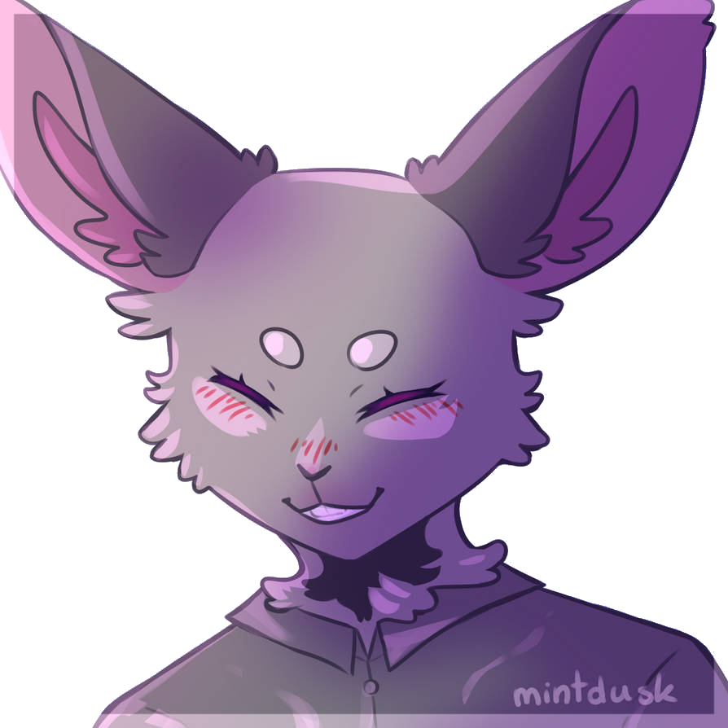

"Is it worth it to be around me?"
Dating the Villain - Honey Ironic
Title: The Rabbit
Full Name: Terrin Yioni
Nicknames: Ter (Mason), T (Eren), Ter-bear (Kieran), Teeb (Us)
Birthday: October 21st
Age: 22
Race: Vampire Full Mystic Rabbit (Grand Master Vampire)
Height: 5'8 excluding ears
Status: Undead.
Job: Unemployed
Chosen Weapon: Claws, biting. Usually flies up and tackles people with her strength.
Affiliations: The Club, The Basement, The Raid
Personality
Snappy, Deflective and Sarcastic. She cracks jokes in most situations and has a dark humour. But once you actually get to know her, she can be quite caring. She doesn't like being tied down with things so she's fickle, but she likes having friends.
Skills
Super strength and speed, only amplified by her rabbit genes. Knows how to lockpick and is very nimble.
Strengths
Very elusive. Can keep up with a situation and can usually get her way out of anything.
Weaknesses
Easily backed into a corner, weak to silver and carrots. She loves carrots too much.
Hobbies
Sleeping, Drinking, watching TV.
Loves
Drinking, Getting Adrenaline and giving people what they deserve.
Likes
Spending time with her friends, getting high and Anne's cooking.
Dislikes
Expired blood, idiots and game shows. They're always rigged.
Hates
Mason, being forgotten and huge robots.
Physical Looks
Tall and thin. Black fur covering her body and tall black ears with pink insides adding another three inches onto her height. A small scar on her left cheek and glowing red eyes with small black pupils.
Clothes
Enjoys leather jackets and dark clothes.
Early Life
Terrin was the oldest of many many siblings. Robbed of a chance to experience her own teenage years by raising her siblings, she ran away at seventeen and turned to a life of crime. Meeting Mason while rummaging through a car trunk, he whisked her away to bigger, better things.
Plot Life
She first become a focus of the gang when they attacked Lucille's ship. She nearly killed Eren, but didn't. When she escaped, she got shot by the police helicopter and nearly bled out, only being saved by being turned into a vampire by Mason. The two of them spent their days together causing petty crime and spent the rest of their time making the screen fade to black.
But once an offender, always an offender. Mason went too far and one day she said no, but he didn't listen. So she snapped and left. This only made him angrier and he hunted her down. He didn't leave her alone for months. She put up dozens of anti-vampire precautions and went half loopy from the constant incenses but he still found her.
Then she went back to her high school with Eren, and found a few familiar faces. Nearly dying to her ex Kieran, Aiden caused his death. In payment, she brought him back to life a while later. She's kinda regretting it, though.
When Aiden started to act strange, she agreed to lock him up next door. He was a danger to her and their friends and she was glad to be rid of him. Mason kept his eye on her during this, stalking her in her room. Eventually they took down Mason and Kieran. Not before he fucked up Aiden, though. Can't he leave anything alone?
The fighting began with Aiden soon after that. He said she was jealous that she wasn't Mason's only target anymore. He's just a child. And now he was a vampire too, he was leeching off her blood supply. What do you do when you hate your roommate?
But..they coped. Then Mason started showing up again. But this time, she wasn't opposed to him. Maybe she missed the company. Eren stopped visiting and Aiden avoided her. One day, he asked her to join him. And she agreed. By that point, she had fallen into his brainwashing. Helping him run his side empire and being a side piece for him, Terrin felt independant. She spent most of her time at the bar, but who cares? What else do they have to do. She wasn't sadistic like Grace and Alice or childish like Tony. It passed the time and clouded her mind even more, making it all a blur of memories.
Then Aiden showed up and within a few days it all crumbled. She fought for Mason in the fight but she broke free of his control eventually and let him get taken down. Not before she stabbed herself in the throat, though. Well, Aiden made her do it. Her hand wasn't her own, then it was shoved into her neck. She's thankful though, she never wanted to hurt Eren. And after she healed, she even made a friend. So maybe the whole experience wasn't too bad.
After Mason's empire, she took a step back from everybody. IT was all over the news and they were all over the news, named as his 'unwilling accomplices to an empire that could have enslaved Replay." Real nice to be recognised for on the street. But when Eren came to her door talking about Nicholas, she knew she had to help. That little jackass had his hand in another terror attack and this time he couldn't get away from it. So she agreed to help find him and take him down.
The raid started off easy. Working with Derrick, the two of them dispatched the soliders and freed the prisoners easily. But when they found some of their group tied up and hanging from the ceiling, things took a turn for the worse. Micheal got put out of commission and then things took a real turn for the worse. Too many robots surrounded them, all coded with one goal. Two, if they fought back too much. She never was one for going all the way, but the robot didn't care. When they were finally freed by DedSec (And a friendly robot who knew her name..), she went straight home with Derrick. She didn't talk to him about it, and he never brought it up. Maybe one day they'll bring it up. It wasn't their fault and it doesn't change anything, but she knows keeping things quiet never helps anybody. She just hopes life can go back to a lull so they can all recover. Especially Eren.
Current Life
She spends her days sleeping or downing blood bags. Derrick gets her out of the house for nights out and Leah makes sure she comes to every meetup, even if they don't know why she's so sad lately. She's glad these people push to stay in her life, but she's fed up. The one person she can talk to is busy with his own issues and now she has nightmares almost every day. But she still keeps sleeping. It's all she can do, immortality is exhausting.

"You can't be rid of me that easy, Eren."
Status: Lovers? Terrin doesn't like labels. But she would burn the world for Eren and knows he would do the same for her.
How they met: When Eren fell down the ladder on Lucille's ship, Terrin was hiding in the hold. After a fight, she spared him. To this day, she's not sure why.
Personal Sentiments: She's glad she has Eren. The two understand each other more than anyone else and Terrin finds it easy to be around Eren. Shit gets bad sometimes, but now Mason is gone gone, she'll be okay.
Extras: They have fun doing Yoga together sometimes. Everyone needs a hobby.

"A cop and a criminal, huh? Don't let your boss find out."
Status: Neither of them really know
How they met: First met at Mason's hideout, after he was defeated. They hit it off quickly and traded numbers.
Personal Sentiments: The two of them match energy in many ways. Both being powerful vampires, they easily work in a team. The airs a little sadder between them after the raid, but they still spend time together. Whatever they are, Terrin is glad she has a friend in Derrick. And Eren will cheer them on no matter what.
Extras: Maybe he taught her to read minds Maybe not. She'll never tell you.
Status: Very annoying roommate.
How they met: Aiden was Kieran's younger adopted brother when she dated him. Reunited with him at her old school.
Personal Sentiments: She is fed up of him. He doesn't understand things, he wants to be an adult yet acts like a child and now he spends all day talking to a bunch of hackers and wreaking havoc. She knows she owes him and the others for rescuing them, but she still doesn't like him. He just..doesn't seem human sometimes. Fights are too common between them, but lately she just avoids him. Maybe he's right, maybe she's jealous of him. But she'd never admit it.
Extras: Why does he have one of those stupid robots in his room? She knows he has no social judgement but does he have no brain either?

"Loving you was pain, hating you is therapy."
Status: Roommates?
How they met: Met at school as young teens, gravitated towards each other being the only full rabbits in the school.
Personal Sentiments: God, he's even worse than his brother. And now he won't leave her alone, half the time being in a stupid snowglobe and the other half staring at her through Aiden's eyes. Why they spared him she will never know. At least he helped save them at the Raid, she thanks him for that.
Extras: Maybe one day she'll let him have his wish of seeing her change. It's kinda funny to hear him complain when she says no.
Status: Close friends, even if they don't know the full story of her life.
How they met: Thomas posted about the group and she sent him a message to come one day. She brought Eren and ever since she's stuck with the group.
Personal Sentiments: She likes them all, though Jesse is a little annoying. But he's her contact for some chill times, so she can't hate him too much. They help her stay grounded in rabbithood and they're good friends.
Extras: She's glad that Thomas and Edith finally got together, but can the other boys finally do the same? She is fed up of the stares and the lingering touches between them. They're so oblivious.
Status: Traumabonded buddies, usually getting drunk every few weekends.
How they met: They were all victims to Mason and his brainwashing. They all experienced his wrath and lust too many times, so they get each other.
Personal Sentiments: They're a handful. But she's not surprised, they were all fucked up. Alice is driving herself away from the others, but Terrin can't find it in her heart to hate her. She sees too much of herself in her. She feels guilty every time Tony catches her eye, but he seems to have forgiven her. He's stronger than she is.
Extras: They all love playing truth or dare together. They have no boundaries anymore so the games can get very fucked up.
"In every world, I'd pull that trigger."
Status: The most likely candidates to hate feck if he was alive.
How they met: Mason found her on one of her nightly robberies and he whisked her away into organised crime.
Personal Sentiments: She's done with Mason. Too long has he peered over her shoulder in the mirror or flashed a camera behind her as she changes. Even if he's long gone, the memories don't feel like it. She's done with it.
Extras: At first a healthy relationship. But then Mason Mason'd everywhere.

- Inspired by the 'prey becoming a predator' trope
- Canonically one of two vampires who can travel with fog (The other being Mason)
- Bnnuy